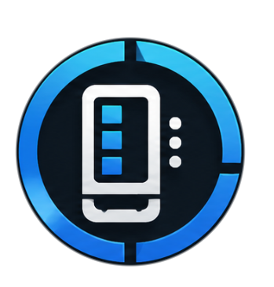

สถาปัตยกรรมระบบควบคุมเครื่องจำหน่ายสินค้าอัตโนมัติ 3 แกน (IRIV PiControl + IRIV IO + NUCLEO-F439ZI)
ระบบแยกหน้าที่ระหว่าง Web Interface, Controller Orchestration, Pulse Generation และ Field I/O อย่างเด็ดขาด
การแยก Process ออกจากกันช่วยให้สามารถอัปเดตหน้าตาเว็บหรือตั้งค่า HMI ได้แบบ Zero-Downtime โดยระบบขับเคลื่อนและ Safety ยังคงทำงานต่อเนื่อง
วงจรแปลงสัญญาณลอจิก 3.3V จาก STM32 เป็นกระแสขับ Optocoupler ของ Stepper Drivers ผ่านวงจร Open-Drain Low-Side NMOS
| แกน | สัญญาณ | STM32 Pin | Header Connector | วงจร NMOS | Driver & Terminal |
|---|---|---|---|---|---|
| X | X_PUL | PA8 | CN12 pin 23 (TIM1_CH1) | Q1 Drain | HBS860H PUL- |
| X | X_DIR | PB0 | CN10 pin 31 (GPIO Out) | Q2 Drain | HBS860H DIR- |
| Y | Y_PUL | PA9 | CN12 pin 21 (TIM1_CH2) | Q3 Drain | HBS860H PUL- |
| Y | Y_DIR | PB1 | CN10 pin 7 (GPIO Out) | Q4 Drain | HBS860H DIR- |
| Z | Z_PUL | PA5 | CN12 pin 11 (TIM2_CH1) | Q5 Drain | DM542 PUL- |
| Z | Z_DIR | PB2 | CN10 pin 15 (GPIO Out) | Q6 Drain | DM542 DIR- |
| Common | V-PULSE | +24V Supply | Terminal Block | — | Driver PUL+ & DIR+ (Common Anode) |
PB0 บนบอร์ด Nucleo ต่อขนานกับ LED1 สีเขียว ดังนั้นซอฟต์แวร์เฟิร์มแวร์จึงต้องปิดการใช้งาน LED ของบอร์ด เพื่อไม่ให้สัญญาณบอกทิศทางของแกน X ถูกรบกวนโครงสร้างการป้องกันอันตราย 2 ชั้น: ฮาร์ดแวร์ตัดกำลังไฟตรง และซอฟต์แวร์ตรวจจับสถานะแบบ Fail-Safe
การแบ่งย่อยระยะทางเคลื่อนที่ตามขนาดบัฟเฟอร์ของ MCU (10,000 steps) เพื่อให้การควบคุมเป็นไปอย่างราบรื่นและปลอดภัย
เงื่อนไขบังคับ 12 ประการที่ต้องผ่านการทดสอบครบทุกข้อ ก่อนอนุญาตให้ทำการ Flash เฟิร์มแวร์ขับเคลื่อนหรือสั่งเคลื่อนที่จริง
| ลำดับ | รายการตรวจสอบ | วิธีตรวจสอบ | สถานะปัจจุบัน |
|---|---|---|---|
| 1 | DI10 Two-State Polarity | อ่านค่า DI10 ขณะกด E-Stop และปล่อย E-Stop | รอทดสอบหน้าตู้ |
| 2 | Z Power Cut via KM1 | ตรวจว่าไฟ 24V ของ DM542 ดับเมื่อกด E-Stop | ยังไม่ผ่าน (Safety Gap) |
| 3 | Dummy Load Voltage Test | วัดแรงดัน Drain-Source ของ NMOS ด้วย Dummy load | รอตรวจ |
| 4 | Oscilloscope Step Pulse | ตรวจสัญญาณ PA8, PA9, PA5 ด้วย Scope โดยถอดมอเตอร์ | รอตรวจ |
| 5 | Watchdog Heartbeat Loss | จำลองตัดสาย USB ระหว่างส่งพัลส์ ต้องหยุดใน 500ms | รอตรวจ |
| 6 | Controller Nucleo Backend | ทดสอบ Unit test จำลอง Fake serial ใน Controller | ผ่านแล้ว (16 tests) |
| 7 | Low-Speed 10mm Test | เคลื่อนที่ 10mm ทีละแกน ตรวจทิศทางและระยะจริง | รอตรวจหลังผ่าน 1-5 |
| 8 | Full Commissioning | ทดสอบ Home All, Jog, GOTO และ Slot 1-30 | ขั้นตอนสุดท้าย |